Corporate task-tracker, rethoughtКорпоративный таск-трекер, переосмысленный
An internship at Red Collar — an audit of a corporate time-tracking & project tool, a new UI, and a friendlier way to work with it.Стажировка в Red Collar — аудит корпоративного инструмента для учёта времени и управления проектами, новый UI и более дружелюбное взаимодействие с ним.
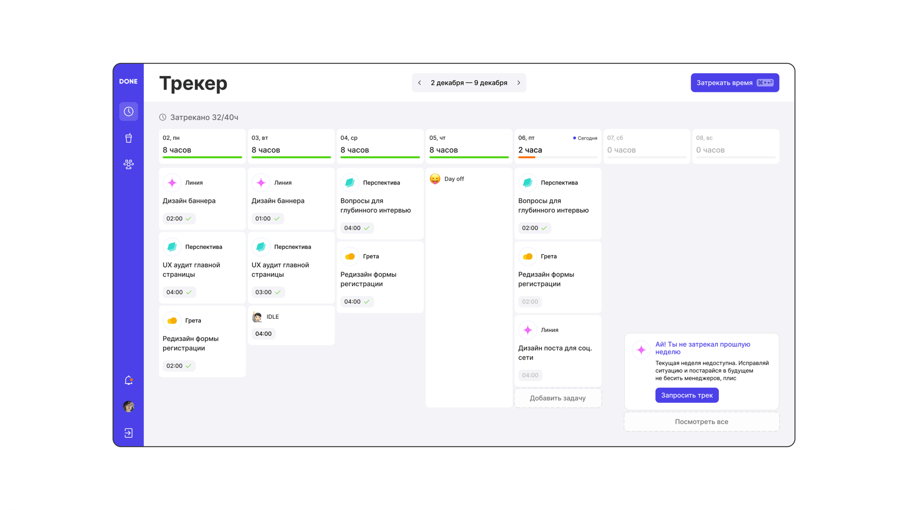
About the projectО проекте
As part of an internship at the Red Collar design studio, the task was to audit the current task-tracker, propose a new UI, and improve the interaction with it — taking into account the context of both the employee and the manager.В рамках стажировки в дизайн-студии Red Collar задачей было провести аудит текущего таск-трекера, предложить новый UI и улучшить взаимодействие с ним, учитывая контекст работы сотрудника и менеджера.
A corporate task-tracker is a tool for time tracking and project management.Корпоративный таск-трекер — инструмент для учёта времени и управления проектами.
- AudienceАудитория продукта
- Company employeesСотрудники компании
- User missionМиссия для пользователей
- Simplify working with the tracker, so employees can get through their daily routine quickly and comfortably.Упростить работу с таск-трекером, чтобы сотрудники могли выполнять свою ежедневную рутину быстро и удобно.
- GoalЦель
- Improve the employee experience of the tracker through an iterative approach — first fixing the most problematic spots one by one, then gradually moving toward predictiveness and simpler interaction. Which, ultimately, leads to higher company revenue and lower losses.Улучшить пользовательский опыт сотрудников при взаимодействии с трекером путём итерационного подхода — сначала точечно доработать самые проблемные места, а затем постепенно приводить к предиктивности и упрощённому взаимодействию. Что, в конечном итоге, ведёт к увеличению дохода компании и сокращению убытков.
My roleМоя роль
I worked on the project on my own, under a mentor's guidance. The research stage (in-depth interviews, PURE) was carried out together with another intern and their mentor.Я работала над проектом самостоятельно, под руководством ментора. Этап исследований (глубинные интервью, PURE) был выполнен совместно с другим стажёром и его ментором.
- Ran 4 in-depth interviews and analysed the resultsПровела 4 глубинных интервью и проанализировала результаты
- Did a UX audit and benchmarkingВыполнила UX-аудит и бенчмаркинг
- Formulated hypotheses and JTBDСформулировала гипотезы, JTBD
- Proposed improvements to the current trackerПредложила улучшения для текущего трекера
- Developed a new conceptРазработала новую концепцию
- Presented the solution to the company's teamПрезентовала решение сотрудникам компании
Discovery & design researchDiscovery & design research
In-depth interviews, PURE, a UX auditГлубинные интервью, PURE, UX-аудит
Together with a colleague, we identified the key scenarios for working with the tracker and the problems inside each one — across two roles.Вместе с коллегой мы выявили ключевые сценарии при взаимодействии с трекером и проблемы в них — в разрезе двух ролей.
The employee's roleРоль сотрудника
- Trouble working with the project and task listТрудности в работе со списком проектов и задач
- Difficulty logging timeСложности при внесении времени
The manager's roleРоль менеджера
- Creating a project is cumbersomeПроцесс создания проекта затруднён
- The project table isn't interactiveТаблица проектов не интерактивная
- The project page is thin on informationСтраница проекта малоинформативна
- Too little detail when creating a taskМало информации для создания задачи
- Monitoring employees' work is hardМониторинг работы сотрудников затруднён
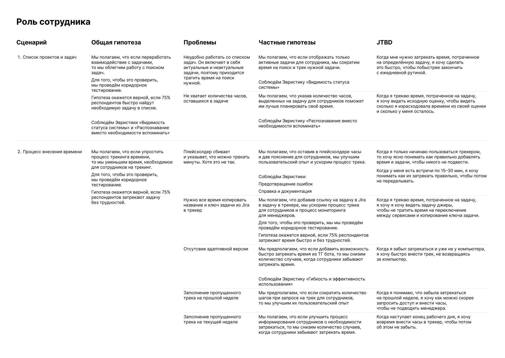
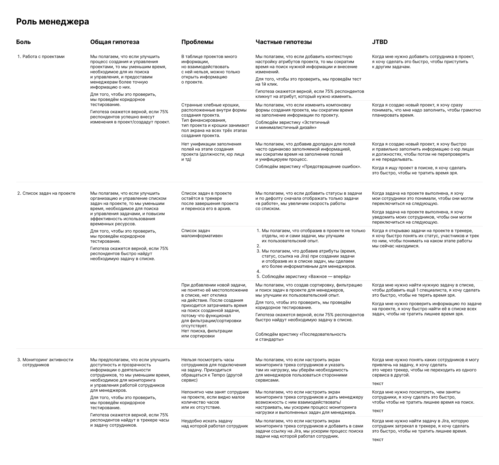
Seven concrete problems came out of this — and I worked through each one in the current tracker.Из этого вышло семь конкретных проблем — и каждую я разобрала в текущем трекере.
Improving the current trackerУлучшение текущего трекера
Seven problems, seven solutionsСемь проблем — семь решений
An inconvenient project and task listНеудобный список проектов и задач
ProblemsПроблемы
- The screen shows every task ever assigned to the employee, including irrelevant ones, with no way to quickly filter or find what's needed. → This increases the time spent searching for the right task, or makes the employee forget to track time.На экране отображаются все задачи, когда-либо назначенные сотруднику, включая неактуальные, без возможности быстро фильтровать или находить нужные. → Это увеличивает время на поиск актуальной задачи или приводит к тому, что сотрудник забывает затрекаться.
- The “favourites” feature works unreliably and needs constant re-setup, which creates extra friction.Работа с избранным функционалом не стабильно работает и требует постоянных настроек, что создаёт дополнительные трудности.
- Employees lack information about the hours left on a project, which makes planning and doing the work harder.Сотрудникам не хватает информации об оставшихся часах на проекте, что затрудняет планирование и выполнение задач.
SolutionsРешения
- Reworked task management: tasks can now be sent to an archive. If the manager sets deadlines on a project, the task disappears from the list automatically once the deadline passes.Доработала управление задачами: теперь можно отправлять задачи в архив. Если менеджер укажет сроки на проекте, то такая задача по истечении срока исчезнет из списка автоматически.
- Added the ability to collapse the task list for better readability and navigation.Реализовала возможность сворачивать список задач для улучшения восприятия и навигации.
- Added a drag handle on hover for arranging projects into a convenient order.Добавила иконку перетаскивания проектов по ховеру, чтобы выстраивать удобный порядок задач.
- Added hour information on each task for more effective time planning and progress control.Добавила информацию о количестве часов на задаче для более эффективного планирования времени и контроля за прогрессом.
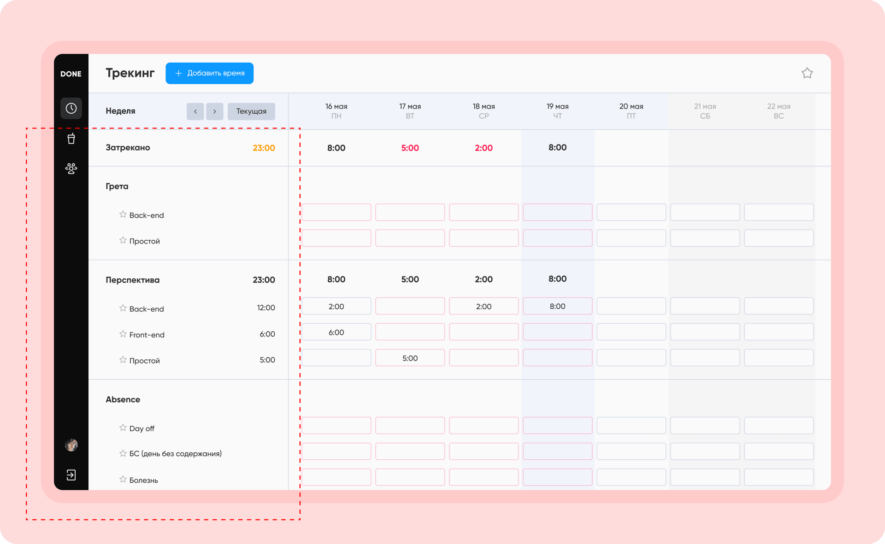
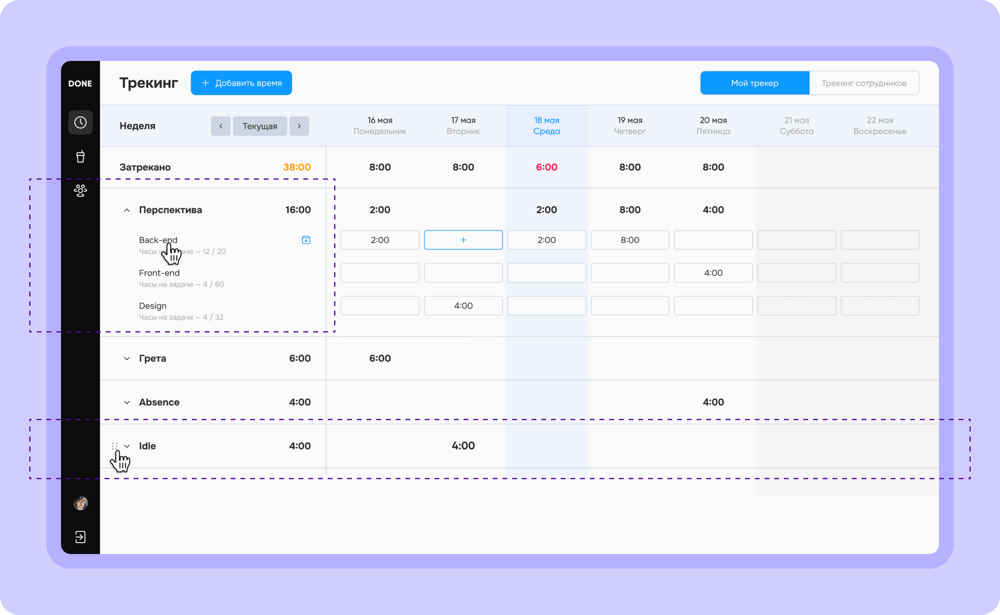
A minutes placeholder that misleadsПлейсхолдер с минутами вводит в заблуждение
ProblemПроблема
- The hours-and-minutes placeholder is misleading, because the company only logs whole hours. It causes confusion and slows the tracking process down.Плейсхолдер с часами и минутами вводит в заблуждение, так как в компании принято указывать только часы. Это создаёт путаницу и замедляет процесс трекинга.
SolutionРешение
- Added input slots for hours only, so tracking becomes clear and intuitively simple for everyone, new employees included.Добавила слоты для ввода только часов, чтобы процесс трекинга стал понятным и интуитивно простым для всех сотрудников, включая новых.
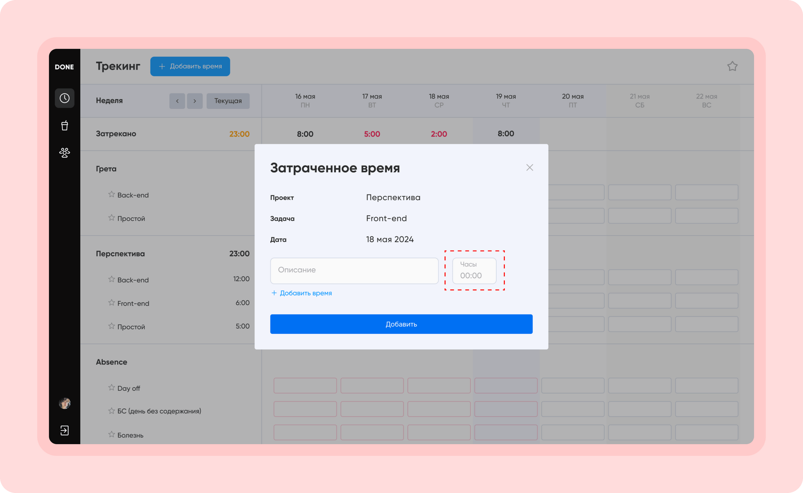
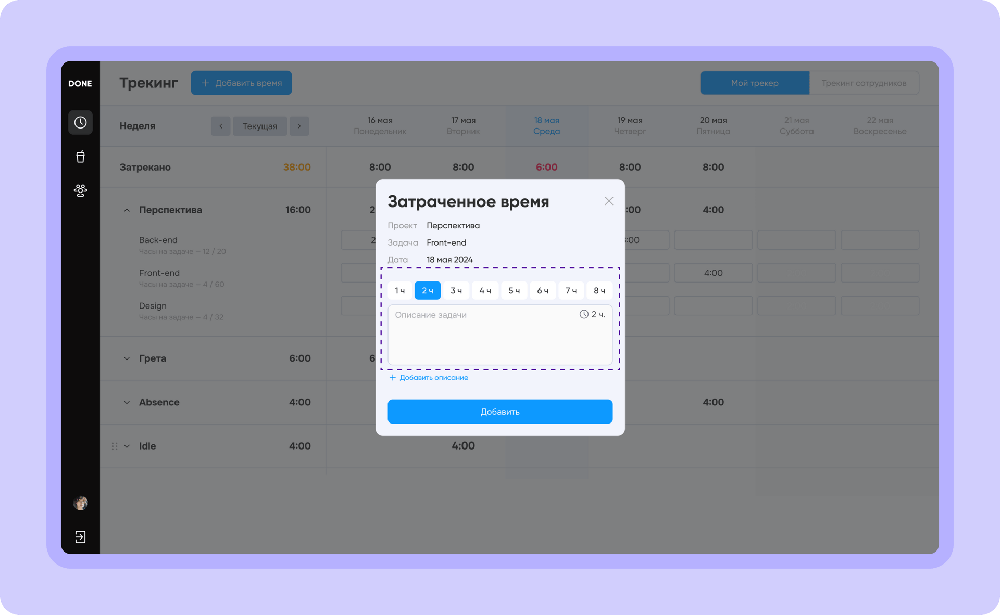
Creating a project is difficultПроцесс создания проекта затруднён
ProblemsПроблемы
- A small input area and having to move between stages via on-screen buttons slow the process down. → This makes creating or editing a project time-consuming and awkward, especially for new employees.Маленькая область для ввода информации и необходимость перемещения между этапами через кнопки на экране замедляют процесс. → Это делает создание или редактирование проекта времязатратным и неудобным, особенно для новых сотрудников.
- The window header takes up 50% of the screen and constantly shows financing types, project types and the filling steps, overloading the interface and getting in the way of focusing on the process.Шапка окна, занимающая 50% экрана, постоянно отображает информацию о типах финансирования, проекта и шаги заполнения, что перегружает интерфейс и мешает фокусироваться на самом процессе.
- No standardisation when filling fields across stages (e.g. job titles, legal entities, etc.). → This leads to incorrect data being saved by accident, which then clutters the filters.Отсутствие унификации в заполнении полей на разных этапах (например, должности, юр. лица и т.д.). → Это приводит к случайному сохранению некорректных данных, что затем засоряет фильтры.
SolutionsРешения
- Widened the drawer. Reworked the project-filling flow: all steps now sit on the left and filling happens by scrolling on a single page. → A faster, more transparent filling process.Увеличила ширину дровера. Переработала процесс заполнения информации о проекте: теперь все шаги вынесены налево, и заполнение происходит по скроллу на одной странице. → Ускорение и повышение прозрачности процесса заполнения информации.
- Added the ability to save new values (e.g. legal entities) during project creation, which ensures standardisation.Добавила возможность сохранять новые названия (например, юр лица) на этапе создания проекта, что обеспечит унификацию.
- Added fields for the Jira project link, hours, budget, deadlines and project phases. → The manager can gather project analytics faster and make important decisions.Добавила поля для ссылки на проект в Jira, количества часов, бюджета, сроков и фаз проекта. → Менеджер сможет быстрее собирать аналитику по проекту и принимать важные решения.
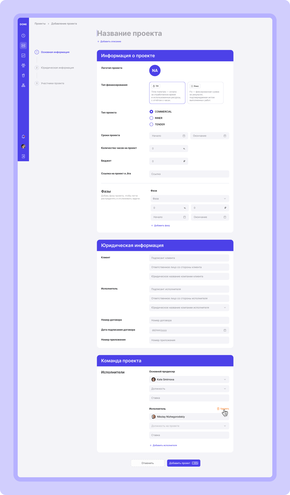
The project table isn't interactiveТаблица проектов не интерактивная
ProblemПроблема
- The table has many attributes, but you can't interact with them — you can only open the project's info. → You can't look at one detail or make a change in the moment; you have to open the full info page or a drawer, like in project creation. This takes a lot of time.В таблице есть много атрибутов, но взаимодействовать с ними нельзя, можно только открыть информацию о проекте. → Нельзя в моменте что-то точечно посмотреть детально или внести изменения. Нужно открывать страницу со всей информацией или дровер как при создании проекта. Это занимает много времени.
SolutionsРешения
- Made the attributes interactive, so managers can review a project's full information and make changes faster.Добавила взаимодействие с атрибутами, чтобы менеджеры могли быстрее ознакамливаться с полной информацией о проекте и вносить изменения.
- Added editing a project in view mode for quick changes — for example, when a mistake is spotted.Реализовала функцию редактирования проекта в режиме просмотра для быстрого внесения изменений, например, при обнаружении ошибки.
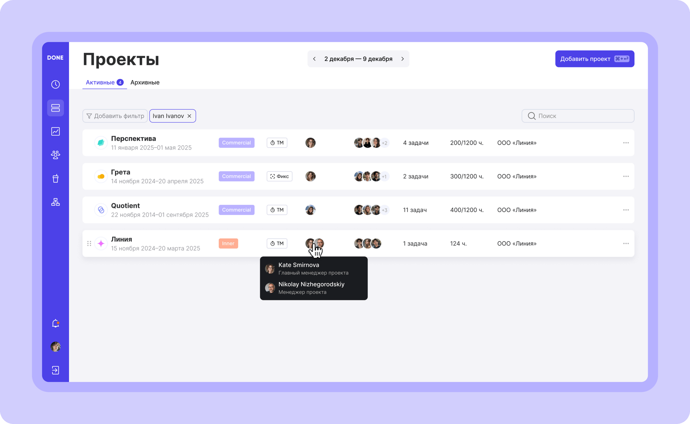
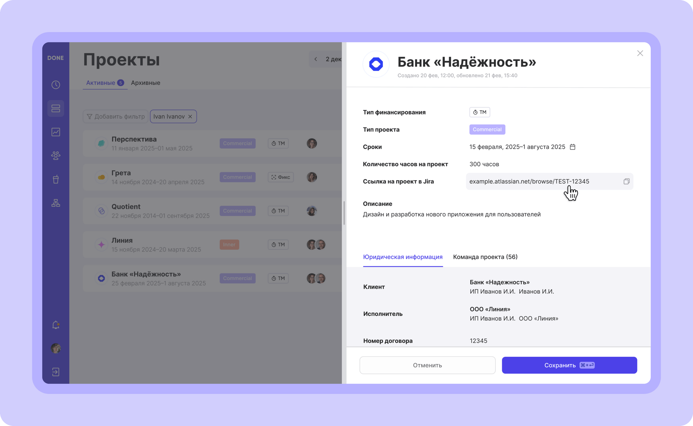
The project page lacks informationСтраница проекта малоинформативна
ProblemsПроблемы
- The page has no project and task information that the manager needs to make decisions. → The manager can't react promptly to a situation, e.g. adding specialists to a project.На странице нет информации по проекту и задачам, которая важна менеджеру для принятия решений. → Менеджер не может оперативно реагировать на ситуацию, например, о добавлении специалистов на проект.
- No sorting, filtering or search across the task list. → It's hard to work with the list and find the right task.Отсутствие сортировки, фильтрации и поиска по списку задач. → Сложно работать со списком и искать нужную задачу.
SolutionsРешения
- Placed hours, budget, deadlines and staff information in the project header.Разместила информацию о количестве часов, бюджете, сроках и сотрудниках в шапке проекта.
- Added phases and the number of tracked hours to task settings.Внесла фазы и количество затреканных часов в настройки задачи.
- Added a filter and search to find tasks quickly. → This lets the manager review information and make decisions fast.Добавила фильтр и поиск для быстрого поиска задач. → Это позволит менеджеру быстро ознакомиться с информацией и принять решения.
- Introduced archiving tasks, so they don't show in the general list and confuse the manager. It also lets employees see only the tasks that are relevant right now.Внедрила возможность архивировать задачи, чтобы они не отображались в общем списке и не сбивали менеджера с толку. Также это позволяет сотрудникам видеть в трекинге только те задачи, которые актуальны на данный момент.
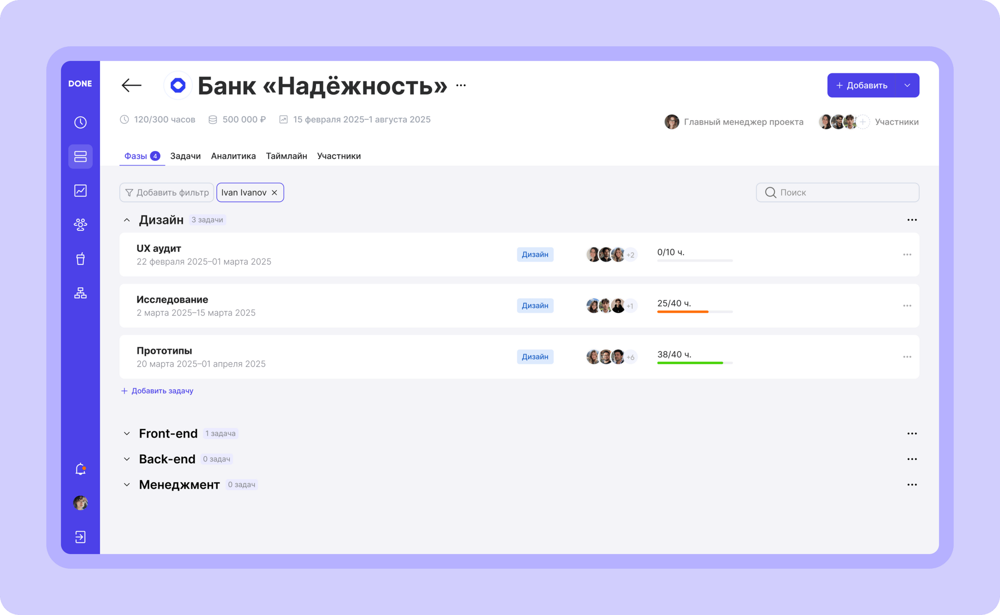
Too little to go on when creating a taskМало информации для создания задачи
ProblemsПроблемы
- Few task settings. → It's inconvenient to interact with and manage tasks.Мало настроек задач. → Неудобно взаимодействовать и управлять задачами.
- When an employee is assigned to a task, that task stays in their tracker forever. → This creates extra noise and makes managing current tasks harder.При назначении сотрудника на задачу, эта задача остается у него в трекере навсегда. → Это создает лишний шум и затрудняет управление текущими задачами.
SolutionsРешения
- Added the ability to set a task's phase and deadlines.Добавила возможность указывать фазу и сроки задачи.
- Reworked assigning an employee to a task: you can now set the hours and the start and end of the work. → The manager sees both the planned hours and the actually-tracked ones, and the employee sees only their current tasks in the tracker.Доработала процесс добавления сотрудника на задачу: теперь можно указать количество часов, начало и окончание работы. → Это позволит менеджеру видеть как запланированное количество часов, так и фактически затреканное. Кроме того, у сотрудника в трекинге будут отображаться только актуальные задачи.
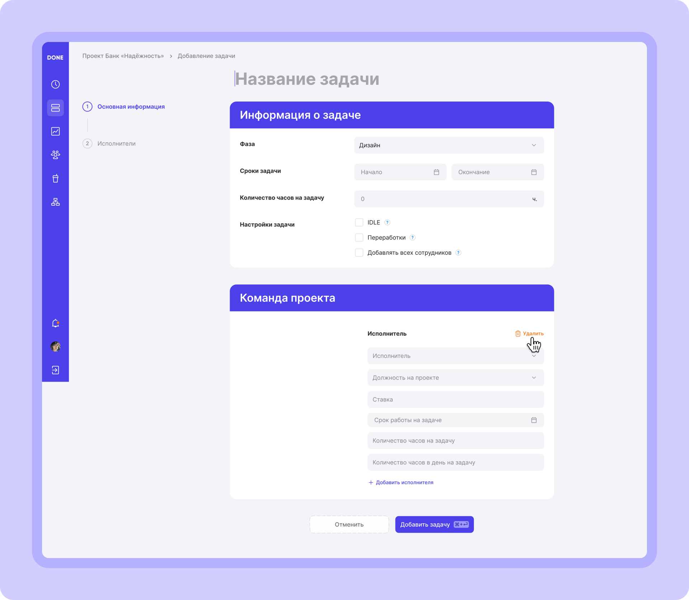
Monitoring tracking is hardМониторинг трека затруднён
ProblemПроблема
- To check employees' tracking, the manager has to type the project name on the tracking screen and then look through everyone's tracking. But that gives no clarity on why someone didn't track time, or tracked only partially. After that the manager has to search for the right employee and find the matching entry in a long task list. → The process takes a lot of time and many steps.Чтобы менеджер мог проверить трек сотрудников, ему нужно вручную ввести название проекта на экране трекинга, затем просмотреть трек сотрудников. Однако, это не даёт ясности, почему сотрудник не затрекал время или сделал это частично. После этого менеджеру нужно искать нужного сотрудника в поиске и в длинном списке задач находить соответствующую запись. → Процесс занимает много времени и требует множества действий.
SolutionРешение
- Now, to check tracking, the manager just opens the “employee tracking” tab in the tracker section. All the data shows on one screen, with no need to switch between the “project” and “employee” views. The manager can tailor the list with a filter on a single screen, see who hasn't tracked time, and view which tasks each employee tracked (by clicking a slot). → This lets the manager monitor the process faster and report to the client promptly.Теперь, чтобы проверить трек сотрудников, достаточно выбрать вкладку «трекинг сотрудников» в разделе трекера. Все данные отображаются на одном экране, без необходимости переключаться между видами «проект» и «сотрудник». Менеджер может настроить список под свои нужды с помощью фильтра на одном экране, увидеть, кто из сотрудников не затрекал время, а также просмотреть, какие задачи были затреканы каждым сотрудником (по клику на слот). → Это позволяет менеджеру быстрее мониторить процесс и оперативно отчитываться перед клиентом.
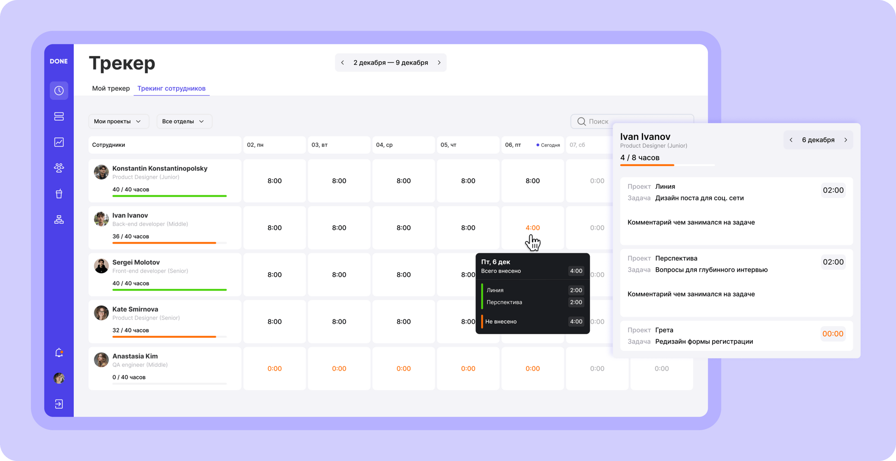
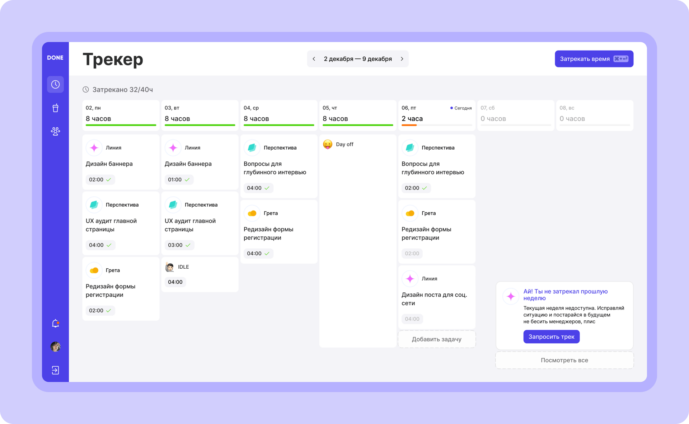
New conceptНовый концепт
A tracker that feels humanТрекер с человеческим лицом
Beyond the fixes, I proposed a friendlier direction: bright colour and clear shortcuts, a tone of voice that talks to a teammate rather than a timesheet, and predictive nudges that remind people to track before a manager has to ask. Projects become draggable and sort into phases, tasks, analytics, timeline and people. Next up — usability testing, and lighter ways to log time: a Telegram bot, one-tap requests for missed days.Помимо точечных правок, я предложила более дружелюбное направление: яркий цвет и понятные шорткаты, тон голоса, который обращается к коллеге, а не к табелю, и предугадывающие подсказки, напоминающие затрекать время до того, как спросит руководитель. Проекты можно перетаскивать и раскладывать по фазам, задачам, аналитике, таймлайну и участникам. Дальше — юзабилити-тестирование и более лёгкие способы учёта: Telegram-бот и заявка на пропущенный трек в один тап.
pain points reworkedпроблем переработано
roles kept in balanceроли в балансе
ideas taken into developmentидеи взяли в разработку